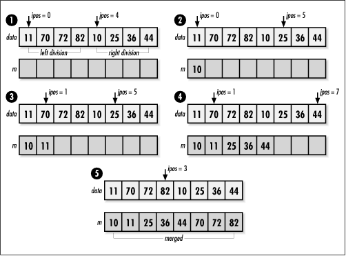

12.10 Implementation and Analysis
of Merge Sort
Merge sort
works fundamentally by recursively
dividing an unsorted set of elements into single-element
divisions and merging the divisions repeatedly until a single
set is reproduced. In the implementation presented here,
data initially contains the unsorted set of
size elements stored in a single block of
contiguous storage. Since merging is not performed in place,
mgsort allocates additional
storage for the merges. Before mgsort returns, the final merged set
is copied back into data.
As we have seen, an important part of merge
sort is the process of merging two sorted sets into a single
sorted one. This task is performed by the function merge (see Example
12.5), which merges the sets defined from position
i to j and from
j + 1 to k in
data into a single sorted one from
i to k.
Initially, ipos and
jpos point to the beginning of each sorted
set. Merging continues as long as there are still elements in
at least one of the sets. While this is true, we proceed as
follows. If one set has no elements remaining to be merged, we
place all elements remaining in the other set into the merged
set. Otherwise, we look at which set contains the next element
that should be placed in the merged set to keep it properly
ordered, place that element in the merged set, and increment
ipos or jpos to the next
element depending on from which set the element came (see Figure
12.4).

Now we look at how the recursion proceeds in mgsort (see Example
12.5). On the initial call to mgsort, i is set to
and k is set to size - 1. We
begin by dividing data so that
j is set to the position of the middle
element. Next, we call mgsort
for the left division, which is from position
i to j. We continue dividing
left divisions recursively until an activation of mgsort is passed a division
containing a single element. In this activation,
i will not be less than k, so
the call terminates. In the previous activation of mgsort, this causes mgsort to be invoked on the right
division of the data, from position j + 1 to
k. Once this call returns, we merge the two
sets. Overall, we continue in this way until the last
activation of mgsort performs
its merge, at which point the data is completely sorted (see
Figure
12.5).
An analysis of merge sort is simplified when
we realize that the algorithm is very predictable. If we
divide a set of data repeatedly in half as shown in Figure
12.5, lg n levels of
divisions are required before all sets contain one element,
where n is the number of
elements being sorted. For two sorted sets of p and q elements, merging runs in O (p +
q) time because a single pass
must be made through each set to produce a merged one. Since
for each of the lg n levels of
divisions we end up traversing all n elements to merge the sets at that
level, merge sort runs in time O (n
lg n). Because we cannot merge
elements in place, merge sort requires twice the space
occupied by the data to be sorted.
Example 12.5.
Implementation of Merge Sort /*****************************************************************************
* *
* ------------------------------- mgsort.c ------------------------------- *
* *
*****************************************************************************/
#include <stdlib.h>
#include <string.h>
#include "sort.h"
/*****************************************************************************
* *
* --------------------------------- merge -------------------------------- *
* *
*****************************************************************************/
static int merge(void *data, int esize, int i, int j, int k, int (*compare)
(const void *key1, const void *key2)) {
char *a = data,
*m;
int ipos,
jpos,
mpos;
/*****************************************************************************
* *
* Initialize the counters used in merging. *
* *
*****************************************************************************/
ipos = i;
jpos = j + 1;
mpos = 0;
/*****************************************************************************
* *
* Allocate storage for the merged elements. *
* *
*****************************************************************************/
if ((m = (char *)malloc(esize * ((k - i) + 1))) == NULL)
return -1;
/*****************************************************************************
* *
* Continue while either division has elements to merge. *
* *
*****************************************************************************/
while (ipos <= j || jpos <= k) {
if (ipos > j) {
/***********************************************************************
* *
* The left division has no more elements to merge. *
* *
***********************************************************************/
while (jpos <= k) {
memcpy(&m[mpos * esize], &a[jpos * esize], esize);
jpos++;
mpos++;
}
continue;
}
else if (jpos > k) {
/***********************************************************************
* *
* The right division has no more elements to merge. *
* *
***********************************************************************/
while (ipos <= j) {
memcpy(&m[mpos * esize], &a[ipos * esize], esize);
ipos++;
mpos++;
}
continue;
}
/**************************************************************************
* *
* Append the next ordered element to the merged elements. *
* *
**************************************************************************/
if (compare(&a[ipos * esize], &a[jpos * esize]) < 0) {
memcpy(&m[mpos * esize], &a[ipos * esize], esize);
ipos++;
mpos++;
}
else {
memcpy(&m[mpos * esize], &a[jpos * esize], esize);
jpos++;
mpos++;
}
}
/*****************************************************************************
* *
* Prepare to pass back the merged data. *
* *
*****************************************************************************/
memcpy(&a[i * esize], m, esize * ((k - i) + 1));
/*****************************************************************************
* *
* Free the storage allocated for merging. *
* *
*****************************************************************************/
free(m);
return 0;
}
/*****************************************************************************
* *
* -------------------------------- mgsort -------------------------------- *
* *
*****************************************************************************/
int mgsort(void *data, int size, int esize, int i, int k, int (*compare)
(const void *key1, const void *key2)) {
int j;
/*****************************************************************************
* *
* Stop the recursion when no more divisions can be made. *
* *
*****************************************************************************/
if (i < k) {
/**************************************************************************
* *
* Determine where to divide the elements. *
* *
**************************************************************************/
j = (int)(((i + k - 1)) / 2);
/**************************************************************************
* *
* Recursively sort the two divisions. *
* *
**************************************************************************/
if (mgsort(data, size, esize, i, j, compare) < 0)
return -1;
if (mgsort(data, size, esize, j + 1, k, compare) < 0)
return -1;
/**************************************************************************
* *
* Merge the two sorted divisions into a single sorted set. *
* *
**************************************************************************/
if (merge(data, esize, i, j, k, compare) < 0)
return -1;
}
return
0;
}
|